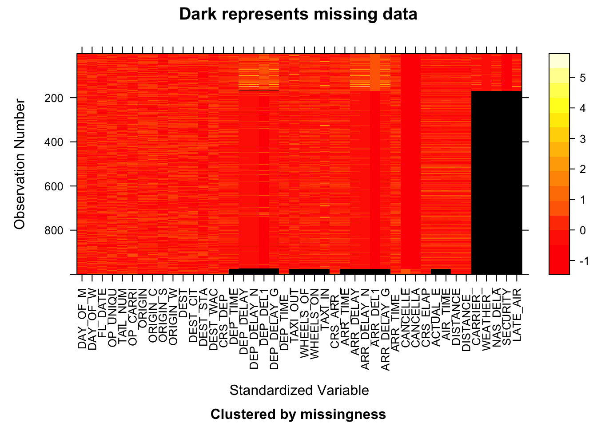

Chapter 3 Data
3.1 Sources
Institution that is responsible for collecting the data:
The institution that is responsible for collecting the data is The Bureau of Transportation Statistics(BTS), which is part of The Department of Transportation.
How is data collected:
BTS collects data by requiring airlines to report each flight’s information, and later displaying these information on its website.
What data source we chose and why:
Initially, we found the Airline Reporting Carrier On-Time Performance DataSet on IBM. Then according to the original source listed on IBM, we traced the data source to the Bureau of Transportation Statistics(BTS). With quick googling about BTS, we realized that all statistics regarding transportations are published there, so we decided to use BTS as our data source. On the BTS website, there are tons of databases, since we are interested in airline on-time performance, we chose the Airline On-Time Performance Data as the data set for this project.
Basic information about the data:
BTS provides flights’ on-time performance data on its website, and one can download the data in csv file for each month. We downloaded data from January 2018 to December 2021. Data for year 2022 is not downloaded because BTS only has data available to September 2022. Then data on the website contains over 100 features, we included 48 of them that we think are worth to explore. Therefore, out data set has 48 columns. Then each month contains near to a million data, which is too much for exploring. Therefore, we randomly sampled 1000 data from each month and combined data them together. With 1000 data from each month and 48 months from four years, out final data set has size of 48000 rows and 48 columns.
Issues/problems about the data:
There are no known issues about the data. After we explored the data, there was one issue we found: more than 75% of data do not have values about the reason for why a flight was delayed.
3.2 Cleaning / transformation
BTS provides flights’ on-time performance data on its website, and one can download the data in csv file for each month.
We have one step for data cleaning and two steps for data transformation:
1. For data cleaning, we did this step when downloading data from the website. Then data on the website contains over 100 features, we included 48 of them that we think are worth to explore.
2. For data transformation, the step was randomly sampled 1000 data from each month. We did this because the original data has near to a million data for each month, which is too large for exploring.
3. For data transformation, the second and the last step was combine data from each month together. Since we downloaded data from January 2018 to December 2021, the resulting data set has 48000 rows and 48 columns.
3.3 Missing value analysis

Since the data set contains 48000 rows, which is too much for plotting, we chose data from four different months with different quarters and different years. The four plots above are from 2018.01, 2019.04, 2020.07, and 2021.10 respectively.
There are two patterns appeared are all four plots:
The first pattern is that most data has missing values on features carrier, weather, nas dela, security, and late air. These five features are actually the five possible reasons why a flight was delayed, and clearly if one reason is missing, all other reasons are missing as well. This is probably because the reason for a flight’s delay is either reported or not.
The second pattern is related to columns about a flight’s departure and arrival performance. If one column about flight’s departure and arrival performance, then all other columns about that are also missing. That is probably because those flights’ performance were not reported at all.
Since the data set has 48 variables, which will cause column names to overlapping, we assigned alphabetic letters as abbreviations to each column. Then we referred back to the assignment when analyzing the missing value patterns.
There are nine patterns displayed by plot_missing functions. However according to number of rows each pattern has, only top three patterns are worth to analyze.
The first pattern is that there are five columns tend to miss at the same time, and these five columns are actually the five possible reasons for a flight’s delay. There are more than 75% data/rows have this pattern.
The second pattern is actually no columns are missing. There are about 15% of data/rows has this pattern, which means about 15% of data have values on all features.
The third pattern is related to columns about a flight’s departure and arrival performance. If one column about flight’s departure and arrival performance, then all other columns about that are also missing. There are about 1% of data/row has this pattern.